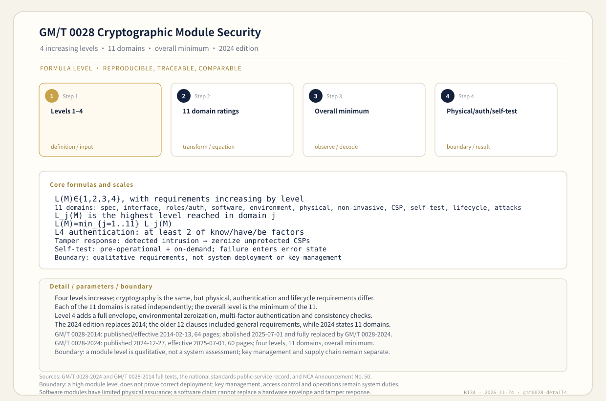
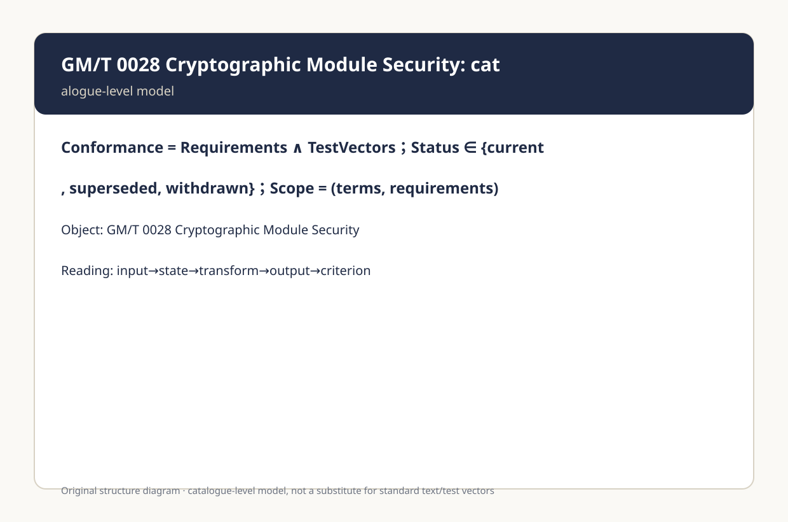

Principles
Standard: GM/T 0028 Security Requirements for Cryptographic Modules (GM/T 0028 密码模块安全要求). GM/T 0028 describes cryptographic modules with four increasing security levels: Level 1 gives basic security functions and CSP establishment; Level 2 adds tamper evidence and role-based authentication; Level 3 adds stronger physical protection and a trusted channel; Level 4 adds a full envelope, environmental zeroization, multi-factor authentication and design consistency verification. The 2024 edition organizes requirements into 11 domains: specification, interfaces, roles/services/authentication, software/firmware, environment, physical security, non-invasive security, CSP management, self-test, lifecycle and other-attack mitigation. Each domain is rated independently, and the overall level is the minimum of the 11; a high rating in one domain cannot hide a weak domain elsewhere.

Why it matters
A cryptographic module is the physical or logical carrier of keys, algorithms and randomness. Saying “supports SM4/SM2” does not answer whether it resists tampering, zeroizes safely or self-tests. Writing the 11 domains and the minimum rule as a decision formula lets procurement, testing and development use the same table.
The 2014/2024 difference must also be kept: the older edition used 12 clauses including general requirements, while the 2024 edition states 11 domains and an overall minimum. Mixing the two produces inconsistent level conclusions.
Applications
List the 11 domains for the product form and attach evidence to each: specification and interface documents, role/service matrix, software/firmware update and integrity, environment assumptions, physical envelope and tamper response, non-invasive testing, CSP generation/input/storage/zeroization, self-test cases, lifecycle configuration and delivery, and other-attack mitigation.
The overall level is the lowest domain; if one domain misses the target, the module drops. Level 4 additionally checks that multi-factor authentication covers at least two of know/have/be, and that tamper or environmental anomalies zeroize unprotected CSPs.
A shared name may belong to an algorithm, standard, event, person or term; this entry is responsible only for its catalogue binding and does not absorb adjacent records. If versions, regions or institutions define the name differently, the differences stay side by side.

Limits & attacks
A module level does not replace a system assessment: key lifecycle, access control, backup/recovery, operator privileges and supply chain can still break overall security. Software modules have limited physical assurance; a software claim is not a hardware envelope. A high-level module can still fail through bad deployment, a weak RNG or key leakage.
Self-test failure must enter an error state and stop cryptographic services, not “log and continue”; tamper response must cover unprotected CSPs, not just a warning lamp. Mixing 2014 and 2024 clauses, or treating the 11-domain minimum as an average, produces the wrong level.
History
GM/T 0028-2014 Security Requirements for Cryptographic Modules was published and effective on 2014-02-13, 64 pages, non-equivalent to ISO/IEC 19790:2012, with four levels, 12 clauses and 11 security domains.
GM/T 0028-2024 Security Requirements for Cryptographic Modules was published on 2024-12-27, effective 2025-07-01, 60 pages, fully replacing the 2014 edition; NCA Announcement No. 50 abolished the old edition. The 2024 text states the overall rating as the minimum of the 11 domains.
Worked example & verification
Formal model and reproduction steps
[S=\min_i S_i,\quad S_i\in{\text{密钥强度},\text{分组安全},\text{实现安全}}]
GM/T 0028 Security Requirements for Cryptographic Modules: the registered public parameters, key material or randomness, and message are mapped through the stated transformation to an output checked against the registered criterion. The worked example is a structural reproduction, not a new test vector; parameter ranges, standard versions and implementation details remain source-bound.
References
- Wikipedia search entry for GM/T 0028 密码模块安全要求. https://zh.wikipedia.org/w/index.php?search=GM%2FT%200028%20%E5%AF%86%E7%A0%81%E6%A8%A1%E5%9D%97%E5%AE%89%E5%85%A8%E8%A6%81%E6%B1%82
- Handbook of Applied Cryptography (Menezes, van Oorschot, Vanstone). https://www.cacr.math.uwaterloo.ca/hac/